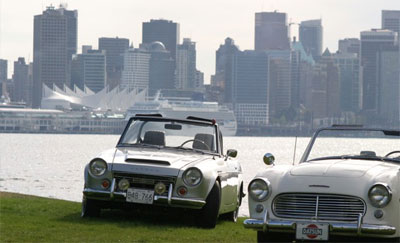

|
Autox Date: Saturday September 18th, 2010
Location: Scott Rd Skytrain Lot - Surrey, BC (Directions)
Car Show Date: Sunday September 19th, 2010
Location: Waterfront Park - North Vancouver, BC (Map)
Directions from the #1 HWY Westbound
Directions from the #1 HWY Eastbound
Time: Gates are open 8:30, registration closes at around 10am, awards given around 2pm, show offically over at 4pm.
Click here to register your vehicle
General admission for the to the Car Show is free, no registration required, just drop by with your camera and some cash in hand for draws, refreshments and food.

The best selection of Nissan's, Datsun's and Infiniti's from every decade join together to enjoy a fantastic weekend of fun and excitement. Relax by the waterfront on the Sunday and take in the automotive history and scenic beauty. If you're a Nissan fan you can't afford to miss out on this event.
Event Schedule
Sunday, exhibitor roll-in and on-site registration opens at 8am.
Saturday, roll-in times and setup will be announced shortly
Registration
Car Show Registration will be available the day of the event, however Autox registration tends to fill up early.
Register now to secure your spot and skip the lineups.
If you are registering at the door please be there early so we can get you sorted out and paid up before registration closes. Pre-reg will help move things along, but is not mandatory. Show parking is first come first served so don't roll in too late even if you pre-register.
Show Classes
- Classic Sedan/Wagon (up to '84)
- Modern Sedan/Wagon ('85 and newer)
- Classic Sports Coupe (up to '83)
- Modern Sports Coupe ('84 and newer)
- Vintage (pre '70 Roadsters and Sedans - not PL510 or 1200)
- Truck and SUV
- Stock Z /ZX
- Longest Traveled
- Hard Luck
- Best of Show (Art)
The Nissan/Datsun Enthusiasts of BC is a cooperative non-profit organization created in November of 2002 by the 510 Club of BC, BC Z Registry, Vancouver Island Datsun Enthusiasts and Northwest Nissans. NDEBC was formed to bring all our clubs together - to provide support for each other and to help preserve Nissan / Datsun cars for many years to come.
Our current plans focus on the successful continuation of the annual All Nissan / Datsun Autocross and Show & Shine in September. |
Pan Pacific Nissan
Richmond Auto Mall
"Looking for a Nissan in Richmond? We proudly support local enthusiasts."
Terra2 Imports
Japanese Vehicle Importing Specialists
"Take a look at our classic and sporty JDM Nissans."
Read up on JDM Nissan guides, or browse JDM Nissans for sale.
|